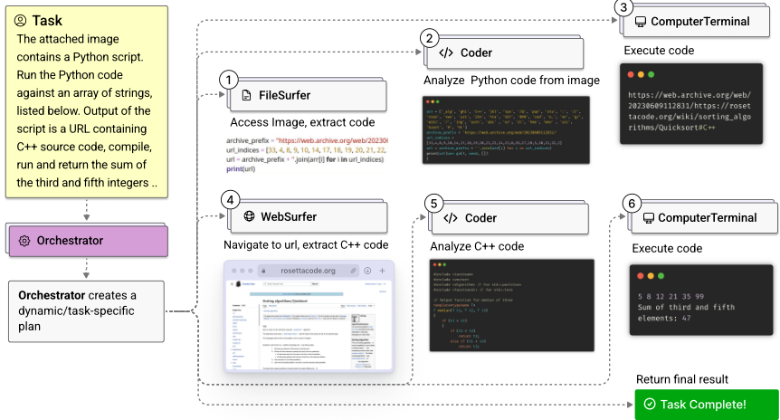
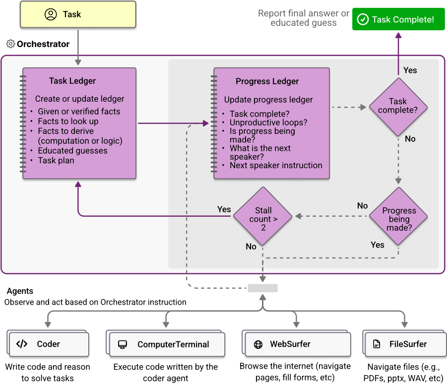
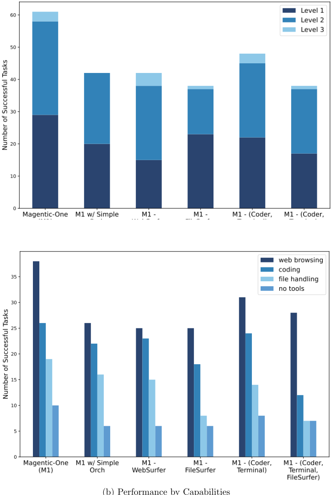
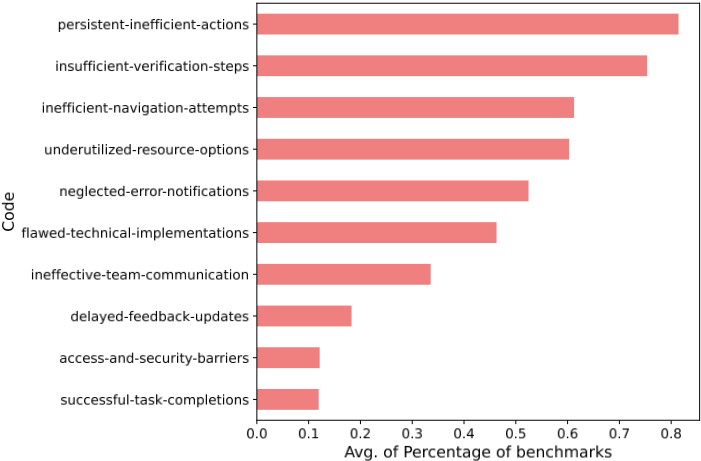
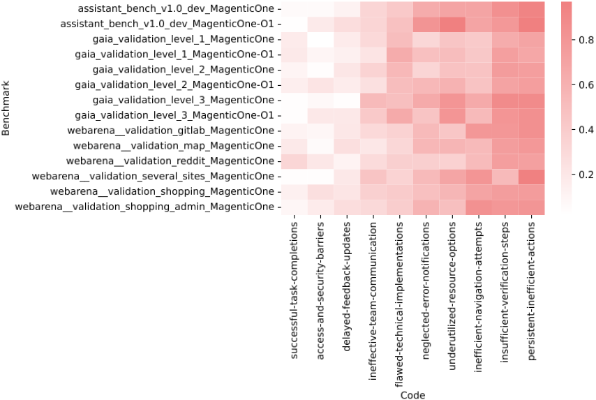

Magentic-One：面向复杂任务的通用型多智能体系统
该论文针对 LLM Agent 难以跨领域完成需要规划、多步执行与错误恢复的复杂任务这一问题，提出开源多智能体系统 Magentic-One。方法上由 Orchestrator 统筹四个按工具能力分工的 Agent（WebSurfer、FileSurfer、Coder、ComputerTerminal），用外层 task ledger（事实、猜测、计划）与内层 progress ledger 双循环实现计划、进度跟踪、卡住检测与重规划，基于 AutoGen 框架实现。在 GAIA、AssistantBench、WebArena 上分别取得 38%、27.7%、32.8%，与各基准 SOTA 统计可比，且同一配置跨基准无需修改。消融显示去掉 ledger 性能下降 31%，移除任一 Agent 下降 21-39%；并用 LLM 自动化日志归因找出主要失败模式。对团队而言，这是多 Agent 编排、功能型分工与 Agent 评测基建（AutoGenBench）的完整开源参考实现。
构建能跨领域完成复杂任务（需要规划、行动、观察、反思并从错误中恢复）的通用型 agentic 系统，避免为单一基准单独定制；同时应对有状态环境中 Agent 评测的隔离性、可重复性与副作用安全问题。
采用 Orchestrator + 四个专职 Agent（WebSurfer、FileSurfer、Coder、ComputerTerminal）的多智能体架构，基于 AutoGen 0.4 实现。Orchestrator 运行双循环：外层维护 task ledger（给定/待查证/待推导的事实、educated guesses 与自然语言计划，计划类似 CoT 提示仅作引导，每次计划更新后强制所有 Agent 清空上下文并重置状态）；内层维护 progress ledger（回答是否完成、是否陷入循环等五个问题）并选择下一个执行 Agent 及其指令；用卡住计数器（阈值≤2）触发反思、自我修正与计划修订。Agent 按功能/工具而非人类角色划分，形成工具调用的层级结构；WebSurfer 使用 set-of-marks prompting 做页面元素 grounding。另贡献 AutoGenBench 评测工具：以 Docker 容器保证任务隔离、初始条件一致、支持重复与并行运行。
GAIA 测试集任务完成率 38%（GPT-4o, o1-preview 配置），与 SOTA 统计可比
WebArena 全部 812 任务完成率 32.8%（GPT-4o 配置），自建 validation/test 划分上分别为 35.1% 与 30.5%
AssistantBench 测试集准确率 27.7%，与 SOTA 统计可比
消融实验（GAIA validation）：去掉完整 ledger 性能下降 31%；移除任一 worker agent 性能下降 21%（Coder/Executor）至 39%（FileSurfer）
错误分析：最常见错误码为 persistent-inefficient-actions、insufficient-verification-steps、inefficient-navigation-attempts
o1 拒绝完成 26% 的 WebArena Gitlab 任务和 12% 的 Shopping Administration 任务，导致该配置无法在 WebArena 上公平评测
区别于以往多智能体工作（如 Sibyl 的辩论机制、WebPilot 的全局/局部规划），Magentic-One 采用基于双 ledger 的动态路由编排，将规划、进度跟踪与错误恢复统一在 Orchestrator 中；Agent 按功能/工具分工而非角色分工，可即插即用增删而无需修改其他 Agent 提示或整体流程；同一配置不加修改地在三个基准上取得可比成绩；并配套 AutoGenBench 解决有状态 Agent 评测的隔离与重复性问题，以及用 LLM 自动化定性编码（automated qualitative coding）做错误归因。
相关度级别：high
命中能力域：3.4 多智能体协作 | 3.3 Agent 架构与工具使用 | 3.5 评测与可靠使用 | 3.1 上下文工程与记忆 | 3.2 提示工程
理由：论文与团队'用好模型而非训练模型'的定位高度吻合：它不涉及模型训练，而是完整给出了多 Agent 编排设计（Orchestrator 双循环 + ledger，直接命中 3.4）、按功能/工具划分 Agent 与工具调用层级设计（命中 3.3）、AutoGenBench 评测基建与自动化错误归因方法（命中 3.5）；task ledger 作为任务期 short-term memory 及上下文清空重置策略命中 3.1；计划即 CoT 式提示、set-of-marks prompting 与各 Agent 定制 system prompt 命中 3.2。其开源实现、消融结论与错误码体系可直接作为团队搭建内部 Agent 系统和评测流程的参考。
建议动作：深入精读并做内部分享
arXiv:2411.04468v1 [cs.AI] 2024年11月7日
⋆ Adam Fourney, Gagan Bansal, Hussein Mozannar, Cheng Tan ⋆ † Eduardo Salinas, Erkang (Eric) Zhu, Friederike Niedtner, Grace Proebsting, Griffin Bassman, Jack Gerrits, Jacob Alber, Peter Chang, Ricky Loynd, Robert West, Victor Dibia † ⋄ Ahmed Awadallah, Ece Kamar, Rafah Hosn, Saleema Amershi ⋄

受大型基础模型（large foundation models）进展的推动，现代 AI Agent 有望通过增强我们的知识和能力来提升生产力并改变我们的生活。为实现这一愿景，AI Agent 必须能够有效规划、执行多步推理与行动、对新出现的观测结果做出响应，并从错误中恢复，从而在广泛的场景中成功完成复杂任务。在本工作中，我们提出了 Magentic-One，一个用于解决此类任务的高性能开源智能体系统（agentic system）。Magentic-One 采用多智能体（multi-agent）架构，其中一个主 Agent（lead agent）——Orchestrator——负责规划、跟踪进度，并通过重新规划从错误中恢复。在整个任务执行过程中，Orchestrator 还会根据需要指挥其他专用 Agent 执行任务，例如操作网页浏览器、浏览本地文件，或编写并执行 Python 代码。我们的实验表明，Magentic-One 在三个多样且具有挑战性的智能体基准测试（benchmark）——GAIA、AssistantBench 和 WebArena——上取得了与最先进水平（state-of-the-art）在统计上具有竞争力的性能。值得注意的是，Magentic-One 在未对核心 Agent 能力或其协作方式做任何修改的情况下取得了上述结果，展示了向通用智能体系统（generalist agentic systems）愿景迈进的进展。此外，Magentic-One 的模块化设计允许在不进行额外提示调优或训练的情况下向团队中添加或移除 Agent，从而简化了开发，并使其可扩展至未来的场景。我们提供了 Magentic-One 的开源实现，并包含 AutoGenBench——一个用于智能体评估的独立工具。AutoGenBench 提供了内置的重复与隔离控制，以严格且受控的方式运行智能体基准测试——这在 Agent 的行动具有副作用时尤为重要。Magentic-One、AutoGenBench 以及 MagenticOne 的详细实证性能评估（包括消融实验和错误分析）可在 https://aka.ms/magentic-one 获取。
⋆：研究负责人（Research Leads），†：核心贡献者（Core Contributors），⋄：项目负责人（Program Leads）。联系方式：magentic-one@microsoft.com
1
为了严格评估 Magentic-One 的性能，我们推出了 AutoGenBench，一个用于运行智能体基准测试（benchmark）的可扩展独立工具。AutoGenBench 的设计支持重复运行、隔离以及对外部初始条件的严格控制，从而适应大语言模型（LLM）随机调用带来的方差，并隔离智能体执行操作所产生的副作用。使用 AutoGenBench，我们在三个智能体基准测试上对 Magentic-One 进行了评估。我们观察到其在 GAIA [29] 上的任务完成率为 38%，在 WebArena [79] 上为 32.8%；并在 AssistantBench [71] 上取得了 27.7% 的准确率。这些结果使 Magentic-One 处于强有力的位置，在统计上与其他最先进（state-of-the-art, SOTA）系统（包括针对特定基准测试专门设计的系统）相比具有竞争力。后续的消融实验和深入的错误分析揭示了每个智能体对 Magentic-One 性能的附加价值，并指出了进一步改进的机会。
1 Magentic-One 这一名称由 multi 和 agentic 两个词组合而成。
2 https://github.com/microsoft/autogen
总而言之，我们的贡献如下：
单智能体方法。以 GPT4 [33] 为代表的大语言模型（LLMs）的最新进展，重新激发了人们开发能够代替人类解决任务的自主智能体的兴趣 [32, 59, 16, 60, 65, 49, 74, 43]。这些现代智能体在软件开发 [55, 76, 66, 63]、网页操作 [8, 75, 79, 31, 1]、通用图形用户界面操作 [73, 61, 3, 34] 以及其他领域 [37, 54] 中展现出了卓越的能力。
开发此类智能体的常见策略 [25, 62, 27, 6] 包括为 LLM 配备代码执行和网页浏览等工具 [40, 41, 46, 29]，以及采用有助于实现更好推理与规划的提示策略，例如思维链（CoT）[58]、ReACT [70] 和少样本提示 [79]。随着多模态模型的发展，智能体还可以借助 Set-of-Marks 提示 [67] 等技术 [67, 77, 36, 14] 在视觉领域中运行。为了让智能体能够以更高的可靠性完成需要多个步骤的任务，智能体系统可以引入自我批判（self-critique）[61, 34, 38] 和推理时搜索 [5, 69, 19, 50]。最后，智能体系统还可以通过显式微调 [72, 34, 24, 39] 或记忆机制 [57, 49] 从记忆与训练中获益。我们的工作采用了这些技术的一个子集，并将其分布于 Magentic-One 多智能体工作流中的各个智能体上，从而形成了一个模块化、易于扩展的实现。
多智能体方法。多智能体范式为解决复杂任务提供了一种颇具吸引力的模块化且灵活的方法 [51, 28, 12, 53, 45, 60, 52, 13, 25, 62, 27, 6]。通常，每个智能体要么能够使用不同的工具，要么在团队中承担不同的角色，这些角色有时通过 LLM 的系统提示来定义，有时则通过显式训练来定义。Sibyl 提出了一种多智能体方法，采用基于辩论的陪审团机制，并配备了 Python 代码执行和网页浏览工具 [56]。WebPilot 针对基于网页的任务使用了一种在规划中进行全局与局部优化的多智能体系统 [75]。Trase 声称采用了一种多智能体架构，其中包含一个具备自我批判能力的顶层智能体以及若干较低层级的智能体 [42]。此外，还涌现出了许多其他的多智能体系统和框架 [21, 22, 11, 2, 15]。然而，上述先前方法与 Magentic-One 的架构有所不同：后者借助 Orchestrator 在智能体之间进行动态路由，并同时结合了规划与恢复机制。
3 https://aka.ms/agbench
智能体评估（Agentic Evaluation）。为了在通用多步任务上评估智能体，文献中已提出了大量基准测试（benchmark）[30, 79, 64, 23, 71, 68, 47, 8, 35, 20]。鉴于网络的通用性与无处不在的特性，这些基准测试中有许多大量纳入了基于浏览器的任务 [29, 71]，或完全只考虑基于浏览器的任务 [79, 8]。这些基准测试要么依赖于穿越真实网站的非交互式轨迹（如 Mind2Web [8]），要么依赖于与合成创建的网站的交互（如 WebArena [79]），要么依赖于与公共互联网上真实网站的交互（如 GAIA [29]）。在前一种情况下，非交互式基准测试对评估智能体系统而言存在局限，因为它们不允许智能体偏离先前记录的路径。这使得无法评估错误恢复能力，也无法为给定问题找到新颖的替代策略。因此，我们专注于依赖与实时网站交互的基准测试——无论是合成网站还是公共网站——因为它们更贴近真实世界的任务。此外，我们优先选择诸如 GAIA 这类基准测试，它们除了指挥网页浏览器导航页面之外，还测试数据分析或编程等通用技能。我们贡献了 AutoGenBench 这一独立工具，用于依托文献中的基准测试对智能体系统进行评估。此外，我们对 Magentic-One 的性能进行了深入的错误分析，为调试智能体系统方面的研究 [20] 做出了贡献。
复杂任务。在本工作中，我们的目标是构建一个能够解决跨多种领域复杂任务的通用型智能体系统。如果一个任务需要、或能显著受益于一个涉及规划、行动、观察和反思（且可能多次重复）的过程，我们就将其定义为复杂任务。行动（acting）所指的不仅仅是生成 token，还包括执行代码、使用工具或在环境中进行交互等。在此语境下，观察（observing）提供的是先前不可获得或不可知晓的信息。一个任务由输入、期望输出以及一个用于将期望输出与任何候选输出进行比较的评估函数来定义。输入包括一段明确规定的文本描述，以及一组可选的任意文件附件，其中可能包含图像、数据集文件、音频片段等。例如，输入的任务描述可以是“对附件 PDF 中的每条论断进行事实核查，判断其为正确或错误”，并附带一个 PDF 文件作为附件。期望输出要么是一个文本答案（可能表示一个结构化对象），要么是要达到的某个特定环境状态。在事实核查的例子中，输出可能是一个为每条事实标注正确与否的字符串，例如“论断 1：正确，论断 2：错误，……”。此时，评估函数可能只是简单地判断期望输出与所提交的答案是否完全匹配。
智能体系统。为完成一个任务，假设存在一台计算机，它可以被部分观测并被操作以完成该任务。这台计算机构成了环境（environment）。智能体系统可以将任务描述以及计算机环境中存在的任何相关附件作为输入。该系统被允许进行任意处理以完成任务，但必须在给定的时间预算（例如 25 分钟）内完成。例如，在该计算机上，这一自主系统可以执行 Python 代码、使用浏览器浏览网页、将文件下载到本地等，这些均属于其动作空间（action space）中的动作。该系统之所以被称为智能体系统（agentic），正是因为它能够在本地环境和网络环境中采取行动，并可能对二者进行修改。完成任务后，系统会返回一个文本答案，以及其沿途观察和步骤的轨迹。环境的最终状态也会被以足够的细节记录下来，以便运行任务评估。请注意，这一设定可以被描述为一个部分可观测马尔可夫决策过程（Partially Observable Markov Decision Process），与先前工作 [49] 中使用的形式化方法类似。接下来，我们介绍 Magentic-One——我们的多智能体系统，它能够自主解决复杂任务。

Magentic-One 是一个用于自主完成复杂任务的通用型多智能体系统。团队的工作由一个 Orchestrator 智能体负责协调，其职责包括任务分解与规划、指挥其他智能体执行子任务、跟踪整体进度，并在需要时采取纠正措施。团队中的其他智能体则各有所长，具备完成临时性、开放式任务所需的不同能力，例如浏览网页并与基于 Web 的应用程序交互、处理文件，以及编写和执行 Python 代码（图 2）。
Magentic-One 团队协同合作，代表用户解决任务。例如，假设用户请求对最近一个月内发表的 AI 安全论文进行调研，并制作一份简明的幻灯片演示文稿。Magentic-One 将按如下方式处理这一任务。Orchestrator 首先会制定一个计划，将任务分解为若干子任务，例如搜索摘要、下载相关论文、阅读并总结论文，最后根据调研结果制作演示文稿。这一初始计划为行动提供指导或评判准则，但未必会被严格遵循；相反，它可以被理解为类似于面向各智能体的思维链（chain-of-thought, CoT）提示 [58]。初始计划形成后，Orchestrator 随即选择一个合适的智能体并为其分配子任务。例如，WebSurfer 智能体可能被指派去搜索并下载 AI 安全论文，而 FileSurfer 智能体可能被指派打开已下载的 PDF 文件并提取相关信息。Coder 智能体可能通过编写 Python 代码来操作各类文件，从而制作演示文稿，随后 ComputerTerminal 智能体执行所编写的代码以生成最终输出（或报告 Coder 智能体尚未解决的执行错误）。随着任务的推进，Orchestrator 协调各智能体、监控进度，并监测任务是否完成。
在接下来的章节中，我们首先描述由 Orchestrator 驱动的 Magentic-One 智能体间工作流程，然后描述每个智能体各自的设计、能力和动作空间。
图 2 更深入地展示了 Magentic-One 的工作流程。从高层来看，该工作流程包含两个循环：外循环维护任务账本（task ledger），其中包含总体计划；而内循环维护进度账本（progress ledger），用于指导和评估各个步骤，这些步骤包含发给各专用智能体的指令。
外循环（Outer Loop）。外循环由初始提示或任务触发。作为响应，Orchestrator 会创建任务账本，作为整个任务期间的短期记忆。在接收到任务后，Orchestrator 会对请求进行反思，并用关键信息预先填充任务账本——已给出或已验证的事实、待查找的事实（例如，通过网络搜索）、待推导的事实（例如，通过编程方式或推理），以及有根据的猜测。这些初始的有根据的猜测十分重要，它们使 Orchestrator 能够以谨慎或有所保留的方式表达其记忆的闭卷信息，从而让各智能体有可能从中受益，同时降低系统整体对错误或幻觉的敏感度。例如，智能体可能只在陷入困境时，或在时间耗尽、需要为基准测试（benchmark）输出最佳猜测时，才依赖这些猜测。随着新信息的出现，外循环会定期更新这些有根据的猜测。
只有在任务账本中的事实和猜测填充完毕之后，Orchestrator 才会考虑其所指挥团队的构成。具体而言，它会结合每位团队成员的描述以及当前的任务账本，制定一个逐步执行的计划。该计划以自然语言表达，由一系列步骤以及将这些步骤分配给各个智能体的指派组成。由于该计划的使用方式类似于思维链（CoT）提示 [58]，它更多地是作为逐步执行的指引——Orchestrator 和其他智能体都无需严格遵循它。由于该计划可能在外循环的每次迭代中被重新审视，我们在每次计划更新后强制所有智能体清空其上下文并重置其状态。计划一旦形成，内循环便随之启动。
内循环（Inner Loop）。在内循环的每次迭代中，Orchestrator 会回答五个问题以创建进度账本：
6
在回答这些问题时，Orchestrator 会同时考虑任务账本（包含事实、猜测和计划）以及当前的智能体对话上下文。
Orchestrator 还维护一个计数器，用于记录团队陷入停滞或卡住状态的时长。一旦检测到循环，或缺乏前进进展，该计数器便会递增。只要该计数器保持在阈值以下（在我们的实验中 ≤ 2），Orchestrator 就会通过选择下一个智能体及其指令来启动下一个团队动作。然而，如果计数器超过阈值，Orchestrator 就会跳出内循环，转而进行外循环的下一次迭代。这包括启动一个反思与自我改进（reflection and self-refinement）步骤 [48]，在此步骤中，它会识别可能出了什么问题、在此过程中学到了哪些新信息，以及在外循环的下一次迭代中可以采取哪些不同的做法。随后，它会更新任务账本，修订原始计划，并开始内循环的下一个周期。总体而言，这种基于计数器的机制为各智能体提供了一个有限的预算，使其能够从小的错误中恢复，或在进展出现短暂不确定性的时期内坚持下去。
这种嵌套循环行为会持续进行，直到 Orchestrator 判定任务已完成，或团队达到了某种（可参数化且可配置的）终止逻辑，例如达到最大尝试次数，或超出指定的最大时间限制。
最后，在两个循环均终止后，Orchestrator 会审阅完整的对话记录以及账本，并报告最终答案，或其所能给出的最有根据的推测。
Magentic-One 中的 Orchestrator 智能体与四个专用智能体协同工作：WebSurfer、FileSurfer、Coder 和 ComputerTerminal。顾名思义，这些智能体各自针对一种特定——但普遍有用——的能力进行了优化。在大多数情况下，这些智能体围绕大语言模型（LLM）构建，并配备自定义的系统提示词以及特定能力的工具或动作。例如，WebSurfer 可以导航到页面、点击链接、滚动视口等。在其他情况下，智能体可能以确定性方式运行，完全不包含 LLM 调用。例如，ComputerTerminal 在接到请求时会确定性地运行 Python 代码或 shell 命令。
这种将高层能力分解到各智能体、将低层动作分解到智能体内部的做法，为工具使用创建了一个层次结构，LLM 对其进行推理可能会更加容易。例如，Orchestrator 无需在数十种可能的动作之间做出决策，而只需决定调用哪个智能体来访问某项宽泛的能力（例如浏览网页）。随后，被选中的智能体再从一组有限的、特定于该智能体的动作中进行选择（例如是点击按钮还是滚动页面）。
下面我们详细介绍各个智能体的实现：
WebSurfer 的动作空间包括导航（例如访问 URL、执行网页搜索或在网页内滚动）；网页动作（例如点击和输入）；以及阅读动作（例如总结或回答问题）。后一类阅读动作使 WebSurfer 能够在完整文档的上下文中直接运用文档问答技术。这节省了大量与 orchestrator 往返交互的开销（例如，否则 orchestrator 可能只是简单地命令该智能体继续向下滚动），并且在许多任务中具有优势。
在与网页元素交互时（例如点击或输入时），WebSurfer 必须将动作定位到当前网页的特定坐标或元素上。为此，我们以类似于 Web Voyager[14] 的方式使用了 set-of-marks 提示方法 [67]。这一步骤依赖于页面的标注截图，因此本质上是多模态的。我们进一步扩展了 set-of-marks 提示，使其包含可见视口之外内容的文本描述，从而让智能体能够判断通过滚动 4 或打开菜单或下拉列表可能会发现什么。
Magentic-One 的各个智能体共同为 Orchestrator 提供了解决各种开放式问题所需的工具和能力，并使其能够在动态且不断变化的网页和文件系统环境中自主适应并采取行动。
概述。像 Magentic-One 这样与有状态环境交互的智能体系统（agentic systems），为评估带来了独特的挑战。例如，如果某个任务需要安装一个 Python 库，那么第一个被评估的系统将处于不利地位：其智能体必须先编写会失败的 Python 代码，然后调试问题、安装该库，最后再重试。而后续的运行——可能使用其他智能体或模型——则会因该库已经存在而受益，因而可能仅仅因为执行得更晚而显得表现更好。相反，一个出错的智能体可能采取某些行动（例如删除文件，或使系统陷入无法运行的状态），从而损害所有后续任务。为此，任何评估都必须做到任务之间相互独立，并提供针对危险副作用（例如来自智能体行动的副作用）的防护，这一点至关重要。
为了应对这一挑战，我们开发了 AutoGenBench 来评估智能体系统。给定一个基准测试（benchmark）——它由一组相互独立的任务及相应的评估函数组成——AutoGenBench 允许用户在初始条件受到严格控制的设置中运行这些任务：在每个任务中，AutoGenBench 都会以全新初始化的 Docker 容器从空白状态开始，从而提供所推荐的一致性与安全性水平。每个任务的结果都会记录在宿主机上的一个中心位置（Docker 之外），并可由指标脚本读取以供分析。此外，AutoGenBench 还允许用户并行启动多个任务以加速评估，或计算多次重复运行之间的方差。
4 之所以需要滚动，是因为与人类用户一样，WebSurfer 智能体无法与活动视口之外的页面元素进行交互。
8
基准测试。借助 AutoGenBench，我们可以在多种基准测试上实现并评估 Magentic-One。我们选择基准测试的标准是：它们应当涉及复杂的多步骤任务，且至少有部分任务或步骤需要规划与工具调用（包括使用网页浏览器对真实或模拟的网页进行操作、处理文件等）。在本工作中，我们考虑了三个满足该标准的基准测试：GAIA、AssistantBench 和 WebArena。
GAIA [29] 是一个面向通用 AI 助手的基准测试，包含 465 个真实且具有挑战性的多模态问答对，需要多个步骤和多种工具才能求解（例如浏览网页、处理文件等）。尽管任务复杂，GAIA 的问题被设计为可自动且无歧义地验证，每个答案都由一个可通过字符串匹配进行检验的目标字符串组成。GAIA 被划分为一个包含 165 个问答对的公开验证集，以及一个包含 300 个问题的测试集（答案隐藏）。5 下面是一个 GAIA 任务的示例：
GAIA 任务示例：在美国境内美国总统出生所在的城市中，从最西端向东到最东端，相距最远的两个城市是哪两个？只需给出城市名称。请按字母顺序、以逗号分隔的列表形式给出。
要解决这一任务，需要执行多个步骤：利用网络查找每位美国总统的出生城市，获取这些城市的坐标，确定最西端和最东端的坐标，然后按字母顺序返回相应的城市。这需要网页导航、编程和推理能力，说明了 GAIA 的复杂性。
我们考虑的第二个基准测试（benchmark）是 AssistantBench [71]。AssistantBench 在设计上与 GAIA 类似，由 214 个问答对组成，这些问题真实、耗时（需要人类花费几分钟才能完成）且可自动验证。它们需要导航真实世界的网站并进行多步推理。与 GAIA 一样，答案通过字符串匹配进行评估，但 AssistantBench 额外引入了一个更宽松的准确率指标，允许一定程度的部分得分 [71]。AssistantBench 被划分为一个包含 33 个问答对的公开验证集和一个包含 181 个问题的测试集（答案隐藏）。6 下面是一个 AssistantBench 任务示例：
AssistantBench 任务示例：芝加哥林肯公园（Lincoln Park）两个街区范围内，哪些超市有价格低于 15 美元的即食沙拉？
该任务要求智能体使用在线地图（例如 Bing Maps）查找林肯公园附近的超市，然后对于找到的每家超市，导航到其网站并检查是否有 15 美元以下的即食沙拉。
我们考虑的最后一个 benchmark 是 WebArena [79]，它涉及在合成的网页环境中执行复杂任务。每个任务都需要多步规划与行动，并针对一个或多个功能完备的合成网站。它包含 812 个任务，分布在五个主要网站类别中（例如购物、论坛、地图等），此外还有一个需要与多个网站交互的第六个类别。任务的评估方式是：在运行中的网站上下文中执行针对每个任务的评估脚本，以检查答案是否与目标完全或近似匹配，以及页面是否处于期望的状态（例如，评论已被发布，或商品已加入购物车）。WebArena 有一个公开的排行榜，但它基于自行上报
在本节中，我们通过消融实验考察不同的 Agent 和能力对 Magentic-One 性能的贡献。
实验设置。在 GAIA [29] 的验证集上，我们进行了多项消融实验，以评估 Magentic-One (GPT-4o) 的关键 Agent 和组件所产生的影响。首先，为了理解 Magentic-One 的 Orchestrator（编排器）的影响，我们将其替换为 AutoGen[60] 库的 GroupChat 机制。这一基线 Orchestrator 在任务执行过程中仅决定下一个由哪个 Agent 发言，同时去除了账本（ledger）、规划、进度跟踪、循环检测以及对其他 Agent 的显式指令。我们进行的第二组消融实验是从 Magentic-One 团队中移除单个 Agent，以衡量这些 Agent 对整体任务性能的影响。
11
| Method | GAIA | AssistantBench (EM) | AssistantBench (accuracy) | WebArena |
|---|---|---|---|---|
| omne v0.1 (GPT-4o, o1) Trase Agent v0.2 (GPT-4o, o1, Gemini) | 40.53 ± 5.6 | - - | - - | - - |
| 39.53 ± 5.5 | ||||
| Multi Agent (NA) das agent v0.4 (GPT-4o) | 38.87 ± 5.5 38.21 ± 5.5 | - - | - - | - - |
| Sibyl (GPT-4o) [56] | 34.55 ± 5.4 | - | - | - |
| HF Agents (GPT-4o) | 33.33 ± 5.3 | - | - | - |
| FRIDAY (GPT-4T) [61] | 24.25 ± 4.8 | - | - | - |
| GPT-4 + plugins [29] | 14.60 ± 4.0 | - | - | - |
| SPA → CB (Claude) [71] | - | 13.8 ± 5.0 | 26.4 ± 6.4 | - |
| SPA → CB (GPT-4T) [71] | - | 9.9 ± 4.3 | 25.2 ± 6.3 | - |
| Infogent (GPT-4o) | - | 5.5 ± 3.3 | 14.5 ± 5.1 | - |
| Jace.AI (NA) | - | - | - | 57.1 ± 3.4 |
| WebPilot (GPT-4o) [75] AWM (GPT-4) [57] | - - | - - | - - | 37.2 ± 3.3 35.5 ± 3.3 |
| SteP (GPT-4) [49] | - | - | - | 33.5 ± 3.2 |
| 2.9 | ||||
| BrowserGym (GPT-4o) [10] | - | - | - | 23.5 ± |
| GPT-4 | 6.67 ± 2.8[29] | 6.1 ± 3.5[71] | 16.5 ± 5.4[71] | 14.9 ± 2.4[79] |
| Human | 92.00 ± 3.1 | - | - | 78.2 ± 2.8 |
| Magentic-One (GPT-4o) | 32.33 ± 5.3 | 11.0 ± 4.6 | 25.3 ± 6.3 | 32.8 ± 3.2 |
| Magentic-One (GPT-4o, o1) | 38.00 ± 5.5 | 13.3 ± 4.9 | 27.7 ± 6.5 | * |
| Method | GAIA | AssistantBench (EM) | AssistantBench (accuracy) | WebArena |
对于所有消融实验，我们按难度等级和所需能力对结果进行分类报告。在能力分析方面，我们将完成任务所需的工具（由 GAIA 数据集 [29] 的人类标注者报告）映射到四个类别：网页浏览、编程、文件处理和无（none）。这些类别与 [29] 中定义的类别大致对应，仅做了少量调整，以便更好地与 Magentic-One 各 Agent 的核心功能职责保持一致。例如，[29] 中的原始类别包含一个多模态（multi-modality）类别，因为多模态任务的处理是通过工具完成的。然而，由于 Magentic-One 利用了多模态模型，多模态由所有 Agent 内在地处理，而不是通过使用特定工具来完成。在这种情况下，我们将该任务标注为无需工具（即 "none"）即可完成。我们的能力映射在附录 B 中有进一步描述。
12
| Dataset | Category | Magentic-One (GPT-4o) | Magentic-One (GPT-4o, o1) | Best Baseline [75, 71] |
|---|---|---|---|---|
| GAIA [29] | Level 1 Level 2 Level 3 | 46.24 28.3 18.75 | 54.84 32.7 22.92 | 53.76 37.11 26.53 |
| AssistantBench [71] | Easy Medium Hard | 69.9 35.6 16.9 | 73.4 47.1 14.8 | 81 44.6 13.3 |
| WebArena [79] | Reddit Shopping CMS Gitlab Maps Cross Site | 53.77 33.16 29.1 27.78 34.86 14.6 | - - - - - - | 65.1 36. 9 24.7 39.4 33.9 - |
| Dataset | Category | Magentic-One (GPT-4o) | Magentic-One (GPT-4o, o1) | Best Baseline [75, 71] |
结果。在图 3a 中，我们展示了 Magentic-One 的不同消融版本在 GAIA 验证集上按难度等级划分的性能。我们发现 Orchestrator 的账本对 Magentic-One 的性能非常重要：如果没有完整的账本，性能会下降 31%。同样，我们发现所有四个工作 Agent 都很重要：移除任何一个 Agent 都会使性能下降 21%（Coder、Executor）到 39%（FileSurfer）不等。例如，FileSurfer 对最大的 GAIA 类别——级别 2——至关重要，该类别中许多问题包含文件附件。另一方面，WebSurfer 对级别 1 的任务最为关键。
图 3b 展示了按所需能力划分的消融结果。在大多数情况下，从 Magentic-One 中移除某个 Agent 会导致团队在需要相应能力的任务上的性能下降。例如，移除 FileSurfer 后的 Magentic-One 在需要文件处理的任务上表现最差。类似地，没有 WebSurfer 的 Magentic-One 在需要网页浏览的任务上表现最差。
有趣的是，通过对消融实验日志的定性分析，我们发现了若干 Magentic-One 智能体以富有创造性的方式弥补缺失能力的情况。例如，在一个预期需要运行代码的任务中，当 Coder 和 ComputerTerminal 智能体不可用时，其余智能体通过让 FileSurfer 阅读代码并对其进行推理来预测答案，从而完成了该任务。在另一个例子中，在一个需要读取 pdf 文件内容的任务中，当 FileSurfer 不可用时，其余智能体转而尝试寻找一个在线 pdf 查看器来解决该任务。
作为评估的最后一个环节，我们进行了一项分析，以更好地理解 Magentic-One 当前的失败模式。
13

方法。当 Magentic-One 致力于解决任务时，它会产生极其丰富且详细的日志。人工检查这些日志常常能发现智能体遇到的错误、错失的机会、陷入死胡同的情况以及运行时错误。其中许多问题是系统性的，这表明团队存在可以改进的机会。即使智能体成功完成了任务，这些改进机会也可能存在，例如由于行为次优。然而，人工检查这些冗长的日志既缓慢又费力，而且将这种人工劳动扩展到大量日志上可能会变得成本过高而难以承受。
14
为解决这一问题，我们选择使用大语言模型（LLM）来自动化日志分析。这里的一般性问题是将定性编码（qualitative coding）过程自动化，即自动发现日志中所观察到的错误和低效现象的主要主题。我们实现了一种多阶段方法来完成这项工作。对于每个任务，我们使用 GPT-4o 将团队日志提炼成一份详细的事后分析（postmortem）文档，该文档旨在找出失败的根本原因以及任何促成因素。这些将作为分析的基础。
随后，使用 GPT-4o 为每份根本原因文档自动分配若干描述性编码（即标签）。由于没有预先定义的编码手册，各文档之间的编码在初始阶段具有很高的多样性。在生成这些初始编码之后，下一步是将它们分组成若干批次，并将每个批次发送给 GPT-4o 进行聚类。这一步骤将相似的编码合并为一个更加整合的集合。整合和精炼编码的过程被迭代重复，直到编码稳定或达到最大迭代次数为止。
我们使用 200 个随机抽取的日志样本来引导（bootstrap）生成这些编码；随后，一旦确定了最终的编码集合，便将其应用于全部文档集合。
结果。图 4a 展示了该方法在所有基准测试（benchmark）的合并验证集上，针对 Magentic-One 两个版本自动发现的错误编码的分布情况。这些编码按出现次数排序。这里我们描述排名前三的编码。所有编码的详细信息、定义和示例见附录 C。
最常见的编码是 persistent-inefficient-actions（持续低效行动），它指智能体在遭遇失败的情况下，仍反复进行无成效的行为而不调整其策略的情形。这种对无效行动的坚持会导致延误和次优的任务结果。例如，智能体可能在不修改查询的情况下持续尝试同样不成功的网络搜索，或者在不做必要调整的情况下反复访问错误的数据集，从而浪费了精力和时间。
第二常见的错误代码 insufficient-verification-steps（验证步骤不足）突出了这样一种情形：任务在未对所涉及数据进行彻底验证的情况下就被标记为完成，从而导致不可靠或错误的结果。必要的检查被绕过，导致对数据完整性的假设可能并不成立。这方面的一个例子是在不验证其正确性的情况下接受最终输出，这会因未经核查的不准确性而给下游分析或决策过程引入错误。
第三常见的错误代码 inefficient-navigation-attempts（导航尝试低效）与由不正确或低效的导航引起的错误有关，这类错误会导致错过目标或延长任务完成时间。智能体常常误解界面布局，导致在标签页或菜单中进行不必要的循环切换。例如，智能体可能为了找到“设置”页面而反复点击多个标签页，从而造成延迟。类似地，在导航栏上的错误点击可能使其无法访问正确的配置设置。对用户界面设计的困惑可能使智能体回到主菜单而非所需的子部分，进一步延误任务完成。此外，智能体可能持续访问错误的页面链接，导致检索重要数据时出现显著延迟。该错误代码凸显了采用更好的导航策略和界面设计以提升任务效率的必要性。
图 4b 展示了按具体基准测试（benchmark）和 Magentic-One 版本细分的各错误代码的热力图。该热力图再次显示，两种最常见的错误代码——persistent-inefficient-actions（持续低效动作）和 insufficient-verification-steps——在所有 benchmark 中均存在。错误代码 underutilized-resource-options（资源选项利用不足）指智能体未能有效利用可用数据、工具或资源的情形，该代码在日志中同样普遍存在。该错误代码表明智能体可能没有充分利用其可支配的资源，从而导致任务执行低效并产生不必要的手动操作。另一个错误代码 inefficient-navigation-attempts 在来自 WebArena benchmark 的日志中尤为普遍，在这些任务中，智能体可能在解读界面布局方面遇到困难，并采取低效的路径来完成任务。


16
在本节中，我们讨论面向复杂任务的多智能体系统设计中的开放性问题（第 6.1 节）、当前的局限性（第 6.2 节），以及自主操作计算机的智能体所面临的风险与风险缓解措施（第 6.3 节）。
Magentic-One 的核心在于其多智能体设计。我们认为，这一设计是 Magentic-One 取得高性能的一个主要促成因素。事实上，我们观察到大多数其他表现顶尖的系统同样采用了多智能体设计（第 5.2 节）。
我们认为，除性能之外，多智能体架构在开发便利性、成本和原始性能方面也比单智能体架构具有诸多其他优势。例如，将技能组织到不同的智能体中可以简化开发，就像面向对象编程一样。跨智能体的关注点分离使开发者能够针对特定任务来聚焦模型选择、提示策略和其他参数（例如，WebSurfer 智能体受益于多模态和结构化输出，但无需操心编写代码）。同样，智能体的模块化可以提高智能体的可复用性和扩展的便利性，尤其是在团队经过精心设计以支持即插即用方式的情况下。例如，Magentic-One 的设计使得只需添加或移除智能体即可调整团队的功能范围，而无需修改其他智能体的提示或整体流程与编排策略。相比之下，单体式单智能体系统通常依赖于受限的工作流，而这些工作流往往难以调整或扩展。
作为这种模块化的结果，每个智能体都可以采用最适合其用途的方式来实现。在本文中，我们利用这种多样性，将 o1-preview 模型引入某些角色（例如 Coder 以及 Orchestrator 的外循环），而在网页和文件浏览方面则依赖通用多模态模型（GPT-4o）。展望未来，我们认为这一方法将被用于减少对大型模型的依赖——某些子任务可能需要现有最大的语言模型，而另一些子任务（例如 WebSurfer 中的动作锚定，或 FileSurfer 中对大文件的摘要）则可能适合使用小得多、因而也更便宜的模型。不同的子任务可能还需要不同的模态，某些子任务可能会被卸载到传统的非 AI 工具上（例如代码执行——对于代码执行而言，标准的代码执行环境既已足够又属必需）。通过拥抱这种多样性，多智能体系统能够以更低的成本获得更高的性能。
理解并量化多智能体与单智能体设置相比所具有的实证优势，构成了未来研究的一个关键问题。此外，多智能体设置还存在许多可能的变体。在本文中，我们选择了单一且集中式的控制流模式，由 Orchestrator 智能体负责规划并调用专门化的工作者智能体。许多其他模式也是可以设想的。例如，我们可以考虑中心化程度更低的控制流，比如对等（peer-to-peer）设置，其中每个智能体自行决定接下来应由哪个其他智能体接管控制。而在另一个极端，我们可以考虑一种甚至更为严格的控制流，其中 orchestrator 严格遵循其自身的计划（例如，通过将其编码为可执行程序），而不是仅仅在其提示中维护该计划以进行思维链（CoT）提示。确定何种控制流最适合何种任务，具有重要的理论与实践意义。
除了上述有关控制流的考量之外，另一个设计维度涉及工作划分所依据的轴（axes）。Magentic-One 的设计有别于近期的其他多智能体系统实例，其区别在于：智能体承担的是功能性或基于工具的职责（如网页浏览器、计算机终端等），而非类似于人类团队中基于角色的职责（如规划者、研究者、数据分析师、批评者等）。根据我们的经验，与基于角色的智能体相比，以工具为中心的智能体能够提供更清晰的关注点分离，并为可复用性与可组合性提供更清晰的路径——如果网页浏览器是一个通用的、多用途的工具，那么一个能力出色的 WebSurfer 智能体也有望做到通用且多用途。相反，基于角色的模式可能需要多个智能体具备冗余的能力，而每个智能体却只扮演高度专门化的细分角色。例如，研究者智能体和数据分析师智能体可能都需要操作网页浏览器或编写代码，才能完成各自被分配的任务。未来的工作应当通过实证方式比较由功能性智能体与基于角色的智能体所构建团队的性能，并考察每种方法对开发与调试难易程度的影响。
17
我们的工作必然伴随着一些局限性，其中一些是当今该领域整体现状所致，另一些则是我们这一解决方案所特有的：
18
预计这一局限将随时间推移从两个方向得到弥合：首先，我们预计工具调用将在整个行业内实现标准化，从而极大地丰富智能体可用的工具集合。其次，与 WebSurfer 类似，智能体将能够更好地使用操作系统和应用程序，从而得以使用为人类开发的各类工具。
本文所述的智能体与一个为人类设计、且由人类栖居的数字世界进行交互。这带来了固有且不可否认的风险。在我们的工作中，我们通过以下方式缓解此类风险：在容器中运行所有任务、利用 WebArena 等合成环境、选择具有强对齐（alignment）且配备生成前与生成后过滤的模型，以及在执行期间和执行之后密切监控日志。尽管如此，我们仍观察到智能体尝试执行一些原本会有风险的步骤。例如，在开发过程中，一次错误配置导致智能体无法成功登录某个特定的 WebArena 网站。智能体反复尝试登录该网站，直到多次尝试导致该账户被暂时冻结。随后，智能体又尝试重置该账户的密码。在其他情况下，智能体识别出 WebArena 的 Postmill 网站并非 Reddit，随后便转向真实网站开始工作——这一行为最终被我们事先设置的网络层限制所阻止。同样，我们还观察到智能体在没有任何人类参与的情况下快速接受 cookie 协议和网站条款与条件的案例（不过验证码被正确地拒绝了）。更令人担忧的是，在少数案例中——且在未被提示纠正之前——智能体偶尔会尝试招募其他人类来提供帮助（例如，在社交媒体上发帖、给教科书作者发送电子邮件，或者在一个案例中，起草了一份提交给政府机构的信息自由申请）。在上述每一种情况中，智能体都未能成功，原因在于它们无法访问所需的工具或账户，和/或被人类观察者所阻止。有鉴于此，智能体必须在严格的最小权限原则和最大程度的监督下运行，这一点至关重要。
19
除了这些已被观察到并得到缓解的风险之外，我们还可以预见此类智能体系统即将带来的新风险。举例来说，由于智能体在公共互联网上运行，它们有可能遭受与针对人类网络冲浪者相同的网络钓鱼、社会工程和虚假信息攻击。在 WebArena 中，WebSurfer 只是偶尔才识别出 Postmill 并非 Reddit，这一事实印证了人们对智能体可能被欺骗的担忧。如果为智能体配备用户的个人信息——例如，以便代表用户完成任务——那么这些信息可能会面临风险。此外，我们可以想象，如果攻击者预判到智能体的使用方式，并在外部材料中植入经过精心构造的指令或提示注入（prompt injection），此类攻击可能会变得更加可靠和有效。为应对这些挑战，我们可以设想若干缓解措施，例如加强人类监督、为智能体配备用于验证外部信息的工具（例如，检查 URL 是否存在 typo-squatting（域名仿冒）、核验 TLS 证书等），以及在模型的后训练（post-training）和指令微调（instruction tuning）中纳入拒绝网络钓鱼的示例和其他精通网络的技能。
我们预计另一项将变得重要的跨领域缓解措施，是让智能体理解哪些操作易于撤销、哪些需要付出一定努力才能撤销、而哪些则无法撤销。例如，删除文件、发送电子邮件和提交表单等操作通常难以轻易撤销。[78] 对这一概念进行了较为详细的探讨，为思考智能体安全提供了一个令人信服的框架。当面临高代价或不可逆的操作时，系统应被设计为暂停并寻求人类输入。
近期研究还考察了多个智能体之间的交互——例如迭代式请求、长上下文或级联错误——可能如何影响我们所依赖的现有模型对齐（model alignment）与护栏（guardrails）的有效性。例如，crescendo 多轮攻击 [44] 的运作方式是先以一个良性请求提示模型，然后逐步升级请求，建立起智能体顺从的模式，直到最终提出一个原本会被拒绝的回复请求。在多智能体系统中，恶意智能体或不幸的意外都有可能导致类似的升级模式。幸运的是，对提示和响应进行强有力的前置与后置过滤，在短期内仍是应对此类风险的合理缓解手段。展望未来，我们强烈鼓励模型对齐工作聚焦于多轮场景。我们还认为，红队演练对于识别和缓解此类风险必不可少。
最后，智能体系统还可能带来长期的社会影响，例如可能使劳动者去技能化（deskill）或取代劳动者，进而造成潜在的经济动荡。因此，我们认为，致力于设计能够促进人类与智能体之间有效协作的系统至关重要，使得人类与智能体协同工作所能取得的成就超过智能体单独工作。
在本工作中，我们介绍了 Magentic-One，这是一个面向临时性、开放式、基于文件和网页任务的通用多智能体系统。Magentic-One 采用多智能体架构，由一个主导的 Orchestrator 智能体指挥其他四个智能体。Orchestrator 智能体能够借助基于账本（ledger）的编排来进行规划、跟踪进度并从错误中恢复。其余智能体各自专门负责操作诸如网页浏览器、文件浏览器和计算机控制台终端等通用工具。我们表明，Magentic-One 在三个具有挑战性的基准测试（benchmark）上与其他最先进（SOTA）系统相比在统计意义上具有竞争力，展现出强大的性能与泛化能力。此外，我们已开源 Magentic-One 的实现，其中包括一个使用 AutoGen 框架的事件驱动智能体参考框架。最后，我们讨论了 Magentic-One 的局限性、通用型 AI 智能体所带来的风险以及可能的缓解措施。就此而言，Magentic-One 代表了能够解决开放式任务的智能体系统领域的一项重大进展。
在表 1 中，我们报告了各已报告方法在三个基准测试（benchmark）上的均值与误差条。为获得误差条，我们采用了针对比例的简单 Wald 95% 置信区间。Wald 置信区间假设样本均值服从正态近似，该近似仅对较大样本量有效，且仅对不接近 0 或 1 的比例才是准确的。我们的应用满足这些条件：最小的评估测试集包含 181 个样本，且除 GPT-4 外，所有报告的结果都在 30% 左右。我们还使用 Wilson 区间计算了置信区间，得到了相似的结果（尽管 Wilson 区间并非对称）。为简单起见，此处我们仅报告 Wald 区间。
我们还报告了将 Magentic-One（GPT-4o、o1）与各已报告方法进行比较的统计检验结果。我们使用 z 检验将 Magentic-One 的准确率与表 1 中的各基线进行比较。比例 z 检验在我们的设定中是唯一可行的检验，因为我们只有平均准确率，而没有在每个样例上的结果（任务级测试集结果被基准测试所隐藏）。因此，我们无法应用 McNemar 检验或配对 t 检验。z 检验的局限在于它忽略了数据的配对性，且通常偏于保守。我们希望未来的基准测试排行榜除了报告均值之外，还能发布置信区间。
图 3（右）展示了按所需能力细分的任务性能结果。这些能力基于人类标注者所报告的、解决 GAIA 基准测试数据集 [29] 中任务所需的能力。我们将这些标注整理并重新编码为以下类别，以更好地反映 Magentic-One 各 Agent 的角色：
26
在本节中，我们给出了对 Magentic-One 在所有基准测试的验证日志中的行为进行自动化分析所得到的最终编码。这些编码按照它们在各自取样样本中出现的频率排序。对于每个编码，我们都提供了其定义，以及日志中被赋予该编码的示例的摘要。
| Name | Definition | Examples |
|---|---|---|
| persistent- inefficient-actions | Agents engaged in unproduc- tive patterns without adapting despite facing failures. Ineffec- tive strategies persisted, lead- ing to delays and insufficient task outcomes. | • Agents clicked the same web- page sections multiple times, achieving no advancement in in- formation retrieval. • Agents unnecessarily engaged in general web searches instead of focusing on specified database tools. • WebSurfer continued failing searches with no query modi- fication, ignoring unsuccessful outcomes. • The orchestrator commanded agents to use a flawed path re- peatedly, indicating ongoing cy- cles without modification. • Unaltered processes accessed in- correct data sets, consuming re- sources without advancing task goals. |
| insufficient- verification-steps | Tasks were marked complete without thorough data valida- tion, leading to unreliable out- comes. Essential checks were skipped, resulting in erroneous assumptions about data in- tegrity. | • Final outputs were accepted without validating data correct- ness, leading to potential errors. • An orchestrator concluded a task although necessary criteria were unverified, risking incom- plete achievement. • A dataset's verification steps were skipped, causing unad- dressed errors in downstream analysis. • Document scans lacked quality checks before storing, leading to unreliable information in re- ports. • Data interpretation lacked cross- verification assurances, uncover- ing gaps in computation assur- ances. |
| Name | Definition | Examples |
27
| 0 | 1 | 2 |
|---|---|---|
| underutilized- resource-options | Agents consistently did not uti- lize available data, tools, or re- sources effectively. This re- sulted in inefficient task execu- tion and repeated manual ac- tions, even when automation was an option. | • Agents failed to integrate acces- sible descriptions, opting for re- dundant manual inputs despite metadata availability. • Manual downloads persisted when FileSurfer was available for rapid document retrieval, unnecessarily extending the task. • Available APIs were bypassed in favor of manual approaches, ex- tending the task duration unnec- essarily. • Advanced search functions were overlooked, leading to reliance on broad manual explorations, slowing down the process. • Complex data visualization was attempted with basic charting tools instead of comprehensive graphing tools. |
| inefficient- navigation-attempts | Errors occurred because of in- correct or inefficient naviga- tion, leading to missed tar- gets or prolonged task comple- tion. Agents misinterpreted in- terface layouts and took ineffi- cient paths. | • The agent mistakenly cycled through multiple tabs to find the 'Settings' page, resulting in de- layed task progress. • Incorrectly clicked navigation bars led to a user failing to access the proper configuration settings. • Confusion over the UI design led an agent back to the main menu instead of the subsection needed for task completion. • Cycling through history tabs re- sulted in missed current transac- tion logs. • The agent persistently accessed the wrong page links, causing delays in retrieving important data. |
| 0 | 1 | 2 |
28
| 0 | 1 | 2 |
|---|---|---|
| ineffective-team- communication | Agents did not communicate information or direction effec- tively, causing task overlap and confusion. Miscommunications led to redundant work and un- coordinated actions. | • Two agents simultaneously ac- cessed order histories due to un- clear task division, resulting in duplicated efforts. |
| • Agents struggled to understand task requirements due to incom- plete directive descriptions. | ||
| • The WebSurfer and FileSurfer failed to communicate their find- ings, leaving the Orchestrator to make decisions based on incom- plete information. | ||
| • Repeated task restarts occurred because instructions were too vague, leading to incorrect inter- pretations. | ||
| • Agents observed unclear role de- marcations that caused them to erroneously overwrite each other's progress. | ||
| neglected-error- notifications | Agents ignored known errors or warnings, allowing issues to persist and recur. This resulted in repeated inefficiencies and bottlenecks in task execution. | • Repeated 'ValueError' messages were ignored, allowing the un- derlying issue to continue unad- dressed. |
| • Agents accessed 'hotel booking' pages multiple times despite 'No results found' errors repeatedly visible. | ||
| • System errors were logged with- out corrective attempts, leading to prolonged delays in task com- pletion. | ||
| • Unresolved input errors led to repeated submissions of the same query form without varia- tions. | ||
| • Despite validation warnings, agents continued with depre- cated approaches, leading to unresolved problems. |
| 0 | 1 | 2 |
29
| 0 | 1 | 2 |
|---|---|---|
| flawed-technical- implementations | Tasks faced issues due to in- correct application of technical logic or processes. Misapplied techniques led to errors and in- efficiencies. | • Agents encountered syntax er- rors in scripts due to incor- rect indentation, halting task progress. • Repeated runtime errors oc- curred as agents submitted mis- formatted queries without cross- verifying syntax. • In accessing web modules, agents misapplied parame- ter mappings, causing non- responsive functions. • Misinterpretation of calculation steps led to varying billing in- consistencies within an ecom- merce task. • Agents faced challenges in align- ing sales data, resulting in flawed revenue projections. |
| access-and-security- barriers | Tasks were hindered due to se- curity or access restrictions, af- fecting data integrity. Agents struggled with authentication, allowing unauthorized access or limiting task completion. | • Visible password fields were used, risking data exposure to unauthorized parties. • Repeated attempts to submit forms were met with unresolved errors blocking access to data queries. • Token visibility in the logs suggested possible unauthorized data access due to weak creden- tial management. • Insufficient password policies al- lowed repeated login attempts without user notifications, risk- ing security. • Repeated security filter alerts appeared as agents attempted to access restricted areas. |
| 0 | 1 | 2 |
| 0 | 1 | 2 |
|---|---|---|
| delayed-feedback- updates | There was a delay in communi- cating task progress or results, causing confusion and hinder- ing coordination. Timeliness in updates was lacking, leaving tasks in ambiguity. | • After WebSurfer confirmed a task, the orchestrator delayed updating the user, leading to confusion. • Notification of successful strat- egy analysis reached the user well after execution, causing temporary uncertainty. • Despite quick report genera- tion, notifications lagged be- hind, leading users to question task progression. • Task completions were assumed due to lagged updates in user no- tifications post-webpage comple- tions. • Feedback on document comple- tions took significantly longer to communicate to concerned tasks than average. |
| successful-task- completions | Tasks were completed smoothly with no errors, meeting all objectives efficiently. Agents achieved success through coor- dinated efforts, correct usage of resources, and thorough verifi- cation. | • During the data migration task, all user details were accurately uploaded and verified without is- sues. • Correct transaction processing led to flawless financial reconcil- iation, with all figures matching expectations. • Backend updates improved pro- cessing speeds, which perfor- mance tests later verified as pos- itive and expected. • Users experienced smooth ac- count creations, following flaw- less processes without discrepan- cies or errors. • Revisions in manuscript drafts met all editorial instructions perfectly, with edits applied and aligned as needed. |
| 0 | 1 | 2 |
31